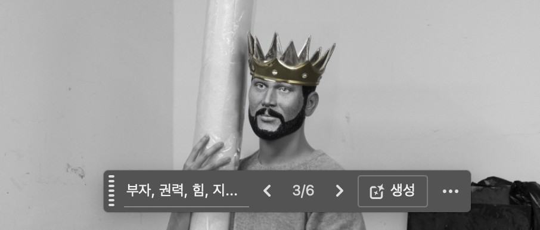
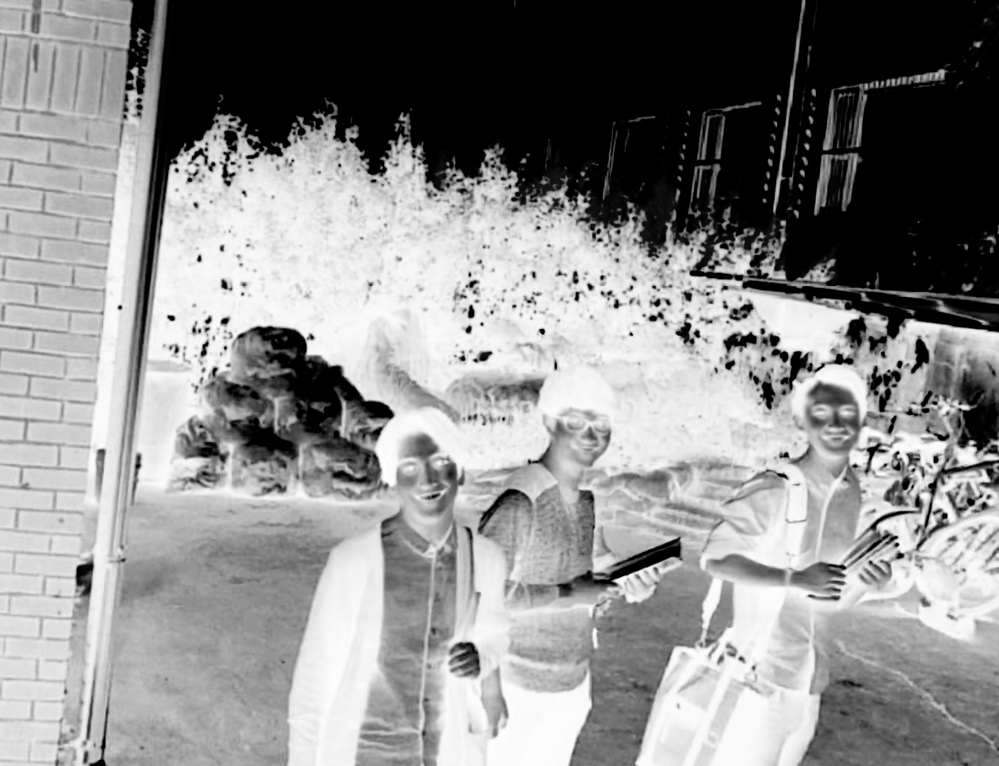
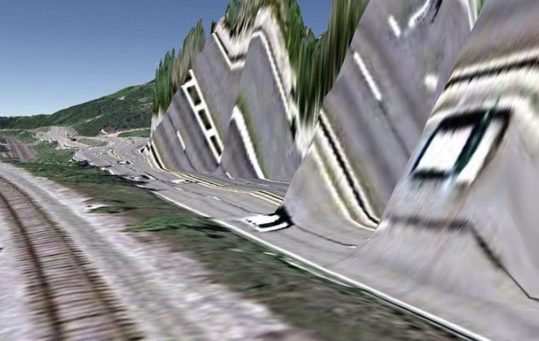
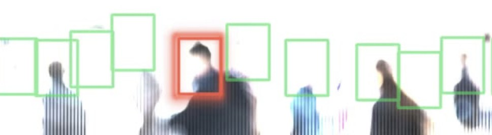
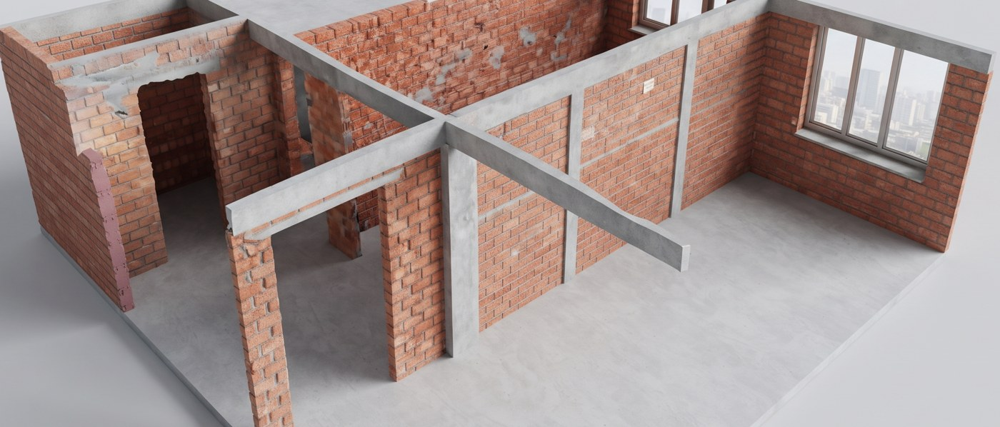

Digital Image는 3D 렌더링, 포인트 클라우드, 글리치, AI 생성 이미지처럼 디지털로 만들어진 이미지 작품입니다.
기억의 합성최민재

한국인 만들기김민지

연결된 침묵정유나

희박한 초상김수현

잔여 산책자들이준영

깊이 지도 위의 몸들박해린

Folded HorizonTom Becker

식별되지 않는 군중정우진

압축의 풍경한소영

음각의 계절류지혜

거울 문법남동훈

기울어진 동시대고은채

Bodies Without GroundYuki Sato
그럴듯한 오후백승현

부재하는 얼굴신예린

미완의 거주차민석